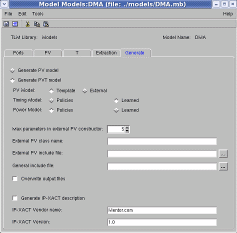

Generating a Model
Both PV and PVT models can be generated using the specifications in the Generate tab, as described below. Note that the default settings for some of the options in this tab can be modified. See Controlling Settings in the Generate Tab for further information.
To generate a model:
- Do one of the following:
- If you are in the process of building the model, in the model builder dialog, click Save & Generate. Continue with step 2.
- If you have previously saved the model specifications without generating code:
Highlight the model you wish to generate, and select Modeling > Generate Code in the menu bar or Generate Code in the right-mouse-button context.
When a model is generated, the output files are also compiled, and any specified scripts are run.
Figure 7‑40.
Generate Tab

- In the Modeling dialog, Generate tab, do one of the following:
- If you do not wish to create a Timing/Power model, select Generate PV Model (This option is typically used during a top-down design process).
- To generate the full PV and T model, select Generate PVT Model.
PV Model:
- Template— for creating a PV template that can be merged into a previously- edited PV
- External— for using an external PV model. For this choice, specify the Class Name and Include File path. Optionally, change the Maximum parameters in constructor to be created in the generated code.
Timing Model:
- Policies— Use the timing policies defined in the “T” section
- Learned— Use timing learned T model (if it exists)
Power Model:
- Policies - Use the power policies defined in the T section
- Learned - Use power learned model (if exists)
- Select Overwrite output files as needed (see note at the end of this procedure for further information).
Output files are created in the directory specified for the model's library. (In the Vista Library Manager, you can specify a physical path for the files in each library. See Libraries.)
The output files are saved in the specified output directory in the name formats specified in Output Files Created by Model Generation. The output files contain all the prototypes of the model.
- PV Model — If Template is selected, a file will be created in the format model_name_pv.h. In future runs on the same model, the new file will be automatically merged with the older one if necessary.
- T Model — A Timing template file is created in the format model_name_pv.h.
model_name_power_model.h (r/o, power learned machine architecture)
model_name_power_model.cpp (r/o)
- (optional) General include file: enter the path and name of an include file for the model.
- Select the Generate IP-XACT description if you want to generate an IP-XACT component description (model-name.xml) for the model in addition to the .h and .cpp files. The generated IP-XACT component will be placed in the same library (and optionally in the Vista Project, if specified) as the generated SystemC code.
In the IP-XACT Vendor name and IP-XACT Version text boxes, specify the vendor name and the version string for the generated IP-XACT component description's VLNV respectively.
- All file-generation settings are saved with the model, and are used in subsequent generate actions.
Controlling Settings in the Generate Tab
You can control the settings used when generating a model by modifying the DEFAULT_GENERATE variables in the settings file. See “Settings for Modeling” for information on the how to change the settings and “Table 2‑2” for the legal variable values.
Output Files Created by Model Generation
The Vista model builder generates the following aggregate files for PV/PVT.
Files Generated
- model_name_pv.cpp (Template file: you can add the behavior of the model here.)
- model_name_pv.h (Template file: you can add the behavior of the model here)
- model_name_model.h (r/o, base classes, and machine architecture here)
- model_name_model.cpp (r/o)
For PVT Only:
- model_name_t.cpp (Template file: you can customize the timing of the model here)
- model_name_t.h (Template file: you can customize the timing of the model here)
For IP-XACT only:
- model_name.xml (Template file: you can add or change the description here)